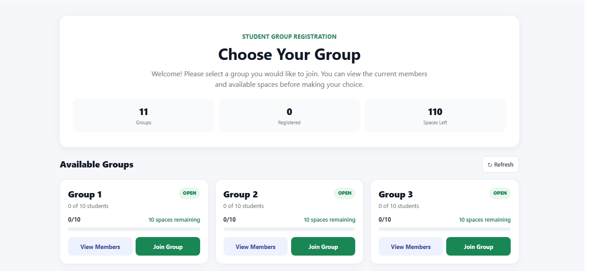
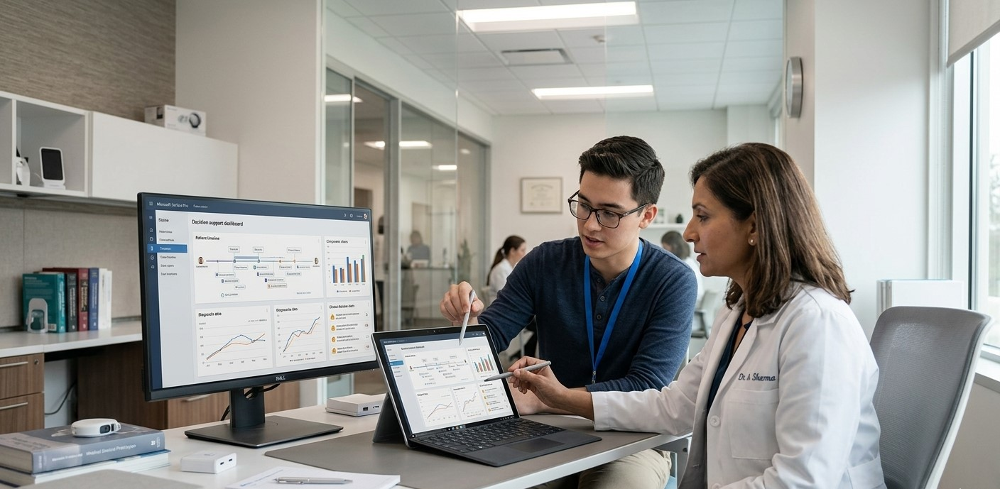
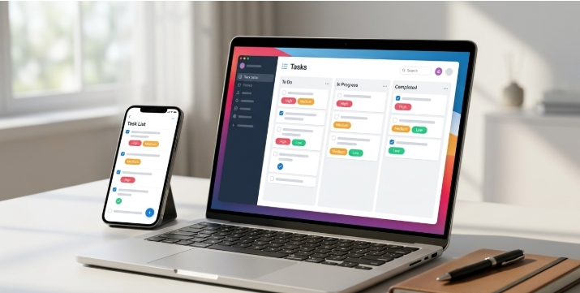
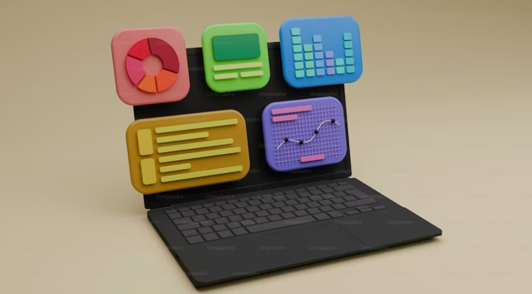

SOFTWARE DEVELOPMENT
Building practical applications that solve real problems.
HELLO, I'M STEPHEN NYARKO
I am a software developer and technology builder focused on creating practical websites, systems, and digital solutions that solve real-world problems. From product thinking to implementation, I build with purpose.
01 / ABOUT

I am a software developer and technology builder with a strong interest in creating practical systems, user-focused digital experiences, and solutions that help people work more effectively. My work combines technical thinking, problem solving, and a hands-on approach to building what matters.
WHO I AM
“I don't just write code. I use technology to solve problems and build meaningful digital systems.”
02 / WHAT I BUILD
Building practical applications that solve real problems.
Creating responsive and modern websites.
Turning repetitive processes into efficient digital workflows.
Exploring technology that improves teaching, learning and administration.
Understanding how software, users, data and infrastructure work together.
Developing skills across programming, Linux, cloud, databases and security.
03 / TECHNOLOGY
04 / CURRENTLY BUILDING
Building modern web applications that connect frontend experience with backend systems.
IN PROGRESSDeveloping practical Linux and systems administration capabilities through hands-on work.
IN PROGRESSImproving secure design practices and resilient software development workflows.
IN PROGRESSDesigning software ideas aimed at education, administration, and digital productivity.
IN PROGRESS05 / TECHNICAL LAB
Technical experiments, small applications, and implementation ideas that sharpen my engineering thinking.
06 / HOW I THINK
"Good software isn't just about writing more code. It's about solving the right problem."
07 / WORK
A selection of systems, product ideas, and digital solutions I have designed and built.

A campus-focused system concept designed to support school management, administration, and technology use in education. The goal is to improve how information, users and services are organized in a practical digital environment.
Planning and managing school operations through a digital system.

Organizing student and group onboarding in a streamlined process.

A diagnostic and information-oriented application concept for healthcare support.


Turning repetitive tasks into digital workflows that save time and effort.
08 / JOURNEY
Starting to build a stronger foundation in technology, problem solving, and software thinking.
Creating practical projects, refining technical skills, and developing a more structured way of building and learning.
Software development
Linux & systems
Cloud Computing
Information security
Database management
Real-world projects
Continuing to learn, build and grow through deeper technical work, systems thinking and meaningful projects.
09 / EDUCATION
University of Ghana
Final Sprint
CERTIFICATIONS
Huawei Certified ICT Associate in Datacom.
Check it out on linkedin
10 / EXPERIENCE
Teaching has strengthened my communication, problem solving and ability to understand user needs. It has also reinforced how important it is to explain technology clearly, support learning and build practical solutions with people in mind.